Телефон: +7 (495) 123-45-67
Электронная почта: farm@gmail.ru
Официальный сайт:
www.farm.ru
Электронная почта: farm@gmail.ru
Официальный сайт:
www.farm.ru
Наша продукция доступна в:
Москва
Анапа
Белокуриха
Воронеж
Екатеринбург
Железноводск
Калуга
Кемерово
Кисловодск
Лиски
Мурманск
Небуг
Новосибирск
Переславль
Ростов Великий
Светлогорск
Сочи
Туапсе
Тюмень
Ульяновск
Хабаровск
Якутск
Санкт-Петербург
Владивосток
Ессентуки
Каспийск
Кострома
Нальчик
Пенза
Саратов
Тобольск
Углич
Шадринск
Астрахань
Йошкар-Ола
Мирный
Роза Хутор
Тула
Ярославль
Геленджик
Нижний Новгород
Уфа
Сергиев Посад
Киров
Россия
Заказать доставку:
8 800 200 00 48


Контакты
Добро пожаловать в Farm – место, где традиции сыроварения сочетаются с
современными технологиями и любовью к натуральным продуктам. Мы –
семейное производство, которое ставит своей целью создание
высококачественного сыра из свежего молока местных фермерских хозяйств.
Наши сыры создаются с душой и заботой. Каждый этап – от выбора ингредиентов до созревания готового продукта – строго контролируется, чтобы обеспечить безупречный вкус и качество. В производстве мы используем только натуральные ингредиенты, а секреты ремесла основаны на многолетнем опыте и уважении к традициям сыроварения.
Farm – это не просто производство. Это философия заботы о природе, поддержка местных фермеров и стремление приносить радость на каждый ваш стол. Наш ассортимент включает как классические сорта сыра, так и уникальные авторские рецепты, которые удовлетворят даже самых изысканных гурманов.
Мы верим, что хороший сыр – это искусство, которое вдохновляет. Попробуйте и почувствуйте разницу сами!
История компании
Наша компания была основана в 2015 году с целью помочь малым фермерам и сыроделам, производящим натуральные и высококачественные сыры, выйти на рынок и предоставить людям возможность наслаждаться настоящими фермерскими продуктами. Мы начали с простой идеи — сделать процесс покупки фермерских сыров удобным, быстрым и приятным. Сначала мы работали с несколькими местными производителями, но с каждым годом наша сеть расширялась, и теперь мы с гордостью представляем сотни уникальных сыров от лучших фермеров страны.
Для того чтобы сделать процесс покупки максимально комфортным для наших клиентов, мы решили разработать собственное веб-приложение. С момента его запуска наша компания неизменно стремится к улучшению интерфейса и внедрению новых технологий, чтобы каждый покупатель мог легко и быстро найти именно тот продукт, который соответствует его вкусам и предпочтениям.
Процесс производства сыра
Наши фермеры и сыроделы — это люди, для которых каждый этап производства сыра является искусством. Отбор молока, процессы созревания, выдержки и упаковки — каждый из этих этапов происходит с максимальной заботой о качестве продукта. Мы работаем только с проверенными производителями, которые придерживаются высоких стандартов и производят сыры без использования консервантов и искусственных добавок.
На нашем сайте вы можете узнать больше о процессе производства каждого сыра: от того, как кормят коров, до того, как сыр созревает в подвалах фермерских хозяйств. Мы также стараемся продвигать идеи устойчивого сельского хозяйства и поддержки локальных производителей.
Сертификаты и награды
Мы гордимся тем, что наше приложение и фермерские продукты получили признание на различных конкурсах и выставках. Вот некоторые из наших достижений:
Наши сыры создаются с душой и заботой. Каждый этап – от выбора ингредиентов до созревания готового продукта – строго контролируется, чтобы обеспечить безупречный вкус и качество. В производстве мы используем только натуральные ингредиенты, а секреты ремесла основаны на многолетнем опыте и уважении к традициям сыроварения.
Farm – это не просто производство. Это философия заботы о природе, поддержка местных фермеров и стремление приносить радость на каждый ваш стол. Наш ассортимент включает как классические сорта сыра, так и уникальные авторские рецепты, которые удовлетворят даже самых изысканных гурманов.
Мы верим, что хороший сыр – это искусство, которое вдохновляет. Попробуйте и почувствуйте разницу сами!
История компании
Наша компания была основана в 2015 году с целью помочь малым фермерам и сыроделам, производящим натуральные и высококачественные сыры, выйти на рынок и предоставить людям возможность наслаждаться настоящими фермерскими продуктами. Мы начали с простой идеи — сделать процесс покупки фермерских сыров удобным, быстрым и приятным. Сначала мы работали с несколькими местными производителями, но с каждым годом наша сеть расширялась, и теперь мы с гордостью представляем сотни уникальных сыров от лучших фермеров страны.
Для того чтобы сделать процесс покупки максимально комфортным для наших клиентов, мы решили разработать собственное веб-приложение. С момента его запуска наша компания неизменно стремится к улучшению интерфейса и внедрению новых технологий, чтобы каждый покупатель мог легко и быстро найти именно тот продукт, который соответствует его вкусам и предпочтениям.
Процесс производства сыра
Наши фермеры и сыроделы — это люди, для которых каждый этап производства сыра является искусством. Отбор молока, процессы созревания, выдержки и упаковки — каждый из этих этапов происходит с максимальной заботой о качестве продукта. Мы работаем только с проверенными производителями, которые придерживаются высоких стандартов и производят сыры без использования консервантов и искусственных добавок.
На нашем сайте вы можете узнать больше о процессе производства каждого сыра: от того, как кормят коров, до того, как сыр созревает в подвалах фермерских хозяйств. Мы также стараемся продвигать идеи устойчивого сельского хозяйства и поддержки локальных производителей.
Сертификаты и награды
Мы гордимся тем, что наше приложение и фермерские продукты получили признание на различных конкурсах и выставках. Вот некоторые из наших достижений:
- Сертификат качества "Экологический продукт": Мы получили этот сертификат за работу с производителями, которые используют только натуральные методы ведения хозяйства и соблюдают экологические стандарты.
- Награда "Лучший онлайн-магазин продуктов питания" на выставке сельскохозяйственных технологий 2024 года. Этот приз мы получили за инновации в сфере разработки интерфейса и пользовательского опыта.
- Сертификат "Натуральный сыр": Наши фермеры получили этот сертификат за производство высококачественного сыра, сделанного исключительно из натурального молока без добавления искусственных ингредиентов.